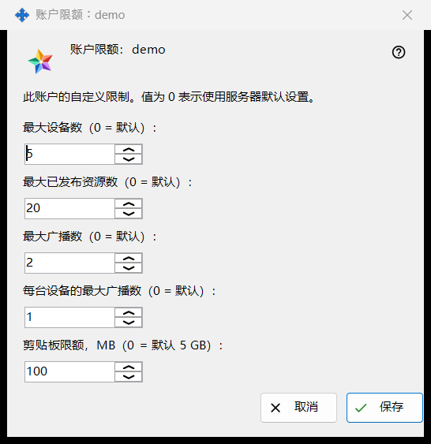
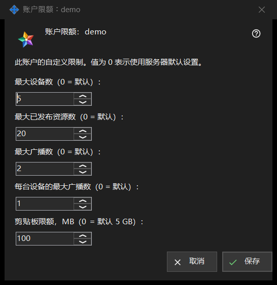

账户限额
用途说明
为您运行的 Media Exchange Server 的某个账户设置单独的限额；保持为 0 的值沿用服务器默认值。从 Share Manager 设置中 Media Exchange Server 页面账户列表下方的「限额..」按钮打开，该按钮在选中账户后出现。标题会写出账户名：「账户限额：<登录名>」。


操作顺序
- 选中账户并点击「限额..」。
- 为想要更改的每项限额设置数值，保持 0 表示沿用服务器默认值。
- 点击「保存」。
- 查看结果行：「账户 <登录名> 的限额已保存。」
界面元素
设备与资源
「最大设备数（0 = 默认）：」限制可登录该账户的设备数量。「最大已发布资源数（0 = 默认）：」限制该账户可在服务器上发布的共享文件夹和其他资源的数量。
广播
「最大广播数（0 = 默认）：」限制整个账户的广播数量，「每台设备的最大广播数（0 = 默认）：」限制其中一台设备可以发起的广播数量。
剪贴板限额
「剪贴板限额，MB（0 = 默认 5 GB）：」设置账户可发送到服务器上其剪贴板的最大值，以整数兆字节计。以更小单位存储的限额（例如 512 KB）显示为 0，只要您不改动此字段，就会保持其精确大小。
保存与取消
「保存」会整体替换该账户自己的限额：每个大于 0 的数值成为一项限额，每个 0 表示沿用服务器默认值，五个 0 则清除该账户的所有自定义值。「取消」不会更改任何内容。如果服务器拒绝某个值，结果行会给出原因，例如「限额不被允许：必须是服务器接受范围内的整数。」